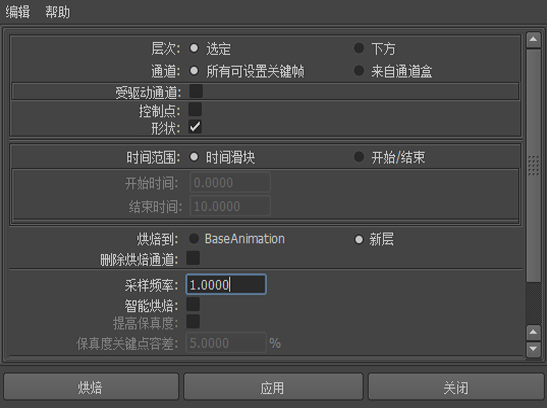

可以像烘焙其他关键帧动画一样烘焙层中的动画。使用“烘焙模拟选项”(Bake Simulation Options)，可以选择是否要在烘焙后保留原始动画层。
烘焙层中的动画
- 选择场景中您要烘焙其分层动画曲线的对象。
- 从主菜单栏的“动画”(Animation)菜单集 (F4) 中，选择(Key > Bake Simulation) >
 。
。
- 在烘焙模拟选项(Bake Simulation Options)窗口中，选择要使用的烘焙选项。例如：
- 使用“烘焙到”(Bake To)选项指定是将动画烘焙到“基础动画”(BaseAnimation)，还是烘焙到新层。
- 如果要在烘焙选定对象的动画后将其属性从所有关联层中移除，请将“烘焙层”(Baked layers)设置为“移除属性”(Remove Attributes)。
注意： 当“烘焙层”(Baked layers)设置为“移除属性”(Remove Attributes)时，选定对象的关键帧将从所有未禁用的关联层中移除。如果工作流是使用类似 Take 的层，请禁用包含在烘焙层之前要保留的关键帧的所有层。
- 如果不需要结果动画的每帧都有一个关键帧，请启用“智能烘焙”(Smart Bake)。
 - 单击“烘焙”(Bake)。
根据您选择的选项，选定对象的动画将与场景中的“基础动画”(BaseAnimation)合并，或者将名为“BakeResultsn”的新层添加到堆栈中。